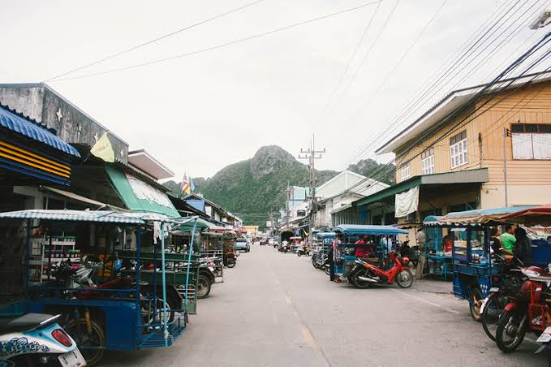
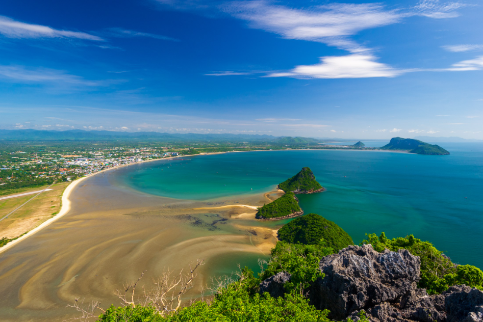

แหล่งท่องเที่ยวแนะนำ

เขาช่องกระจก
- เป็นสถานที่ท่องเที่ยวสำคัญและเป็นสัญลักษณ์ของเมืองประจวบคีรีขันธ์ ตั้งอยู่บริเวณด้านหลังศาลากลางจังหวัด ในเขตเทศบาลเมืองประจวบคีรีขันธ์
- · ลักษณะภูมิประเทศ : เป็นภูเขาขนาดย่อม สูงประมาณ 245 เมตรจากระดับน้ำทะเล (หรือประมาณ 94 เมตรจากพื้นราบใกล้ชายฝั่ง)
· ที่มาของชื่อ : บริเวณด้านทิศเหนือของภูเขามีช่องทะลุโปร่ง มองดูคล้ายกับกรอบของกระจก
· การเดินทางขึ้นไปด้านบน : ต้องเดินขึ้นบันไดคอนกรีตจำนวน 396 ขั้น
· เวลาเปิดทำการ : เปิดให้เข้าชมทุกวัน เวลา 05.00 – 20.00 น.

ศาลหลักเมืองประจวบคีรีขันธ์
- · ที่ตั้ง : ถนนสละชีพ ตำบลประจวบคีรีขันธ์ อำเภอเมืองประจวบคีรีขันธ์ (ตรงข้ามศาลากลางจังหวัดประจวบคีรีขันธ์ และใกล้กับเขาช่องกระจก)
· เวลาทำการ : เปิดทุกวัน ตั้งแต่เวลา 08:00 - 19:00 น.
· สถาปัตยกรรม : เป็นอาคารทรงจตุรมุขยอดปรางค์ 9 ชั้น งดงามด้วยศิลปะแบบลพบุรีผสมผสานศิลปะไทย
องค์หลักเมือง (นาม "จตุโชค"):
- ·ทำจากไม้ตะเคียนที่ได้มาจากอำเภอกุยบุรี
· มีขนาดความสูง 2.74 เมตร เส้นผ่านศูนย์กลาง 0.37 เมตร
· สถาปัตยกรรม : เป็นอาคารทรงจตุรมุขยอดปรางค์ 9 ชั้น งดงามด้วยศิลปะแบบลพบุรีผสมผสานศิลปะไทย
ตลาดชุมชน

เดินชมร้านค้าและเลือกซื้อผลิตภัณฑ์จากคนในพื้นที่
จุดชมวิว

แวะพักและถ่ายภาพทิวทัศน์ของชุมชน